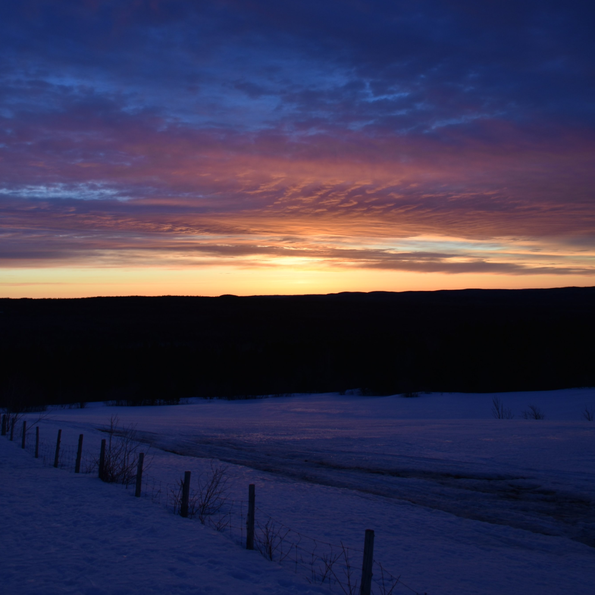

J Madamartigan
 Discovered at an early age, J Madamartigan has followed his bliss to kitchens, bakeries, and classrooms. Creating art, memories, and stories along the way.Having graduated Summa Cum Laude from his local univeristy with muliptle degrees, Madmartigan’s personal trajectory is intrinsically connected to the themes and heroes he grew up with in comicbooks and children’s literature . Living his best life in service to other’s and striving to make the world a better place through patience and kindness: everywhere there is beauty, when you know where to look.
A collector and supporter of Art, artists, narratives, and technology , J Madmartigan is an active member in the community of collectible original comicbook art, landscape paintings, and frequently sponsors artists in the completion of their personal works.
Passionate about poetry, J Madmartigan is an active supporter of new voices, while also writing and publishing how own romantic poems nightly.
NFT represent an exciting frontier for greater creativity and J Madmartigan is excited to be part of this growing , enthusiastic community.